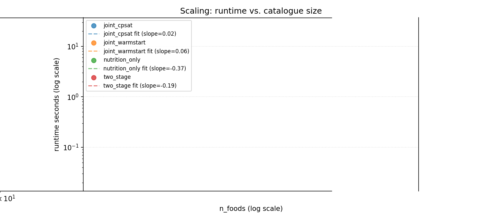
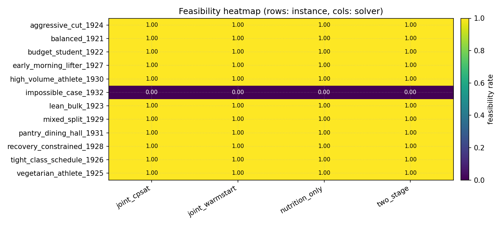
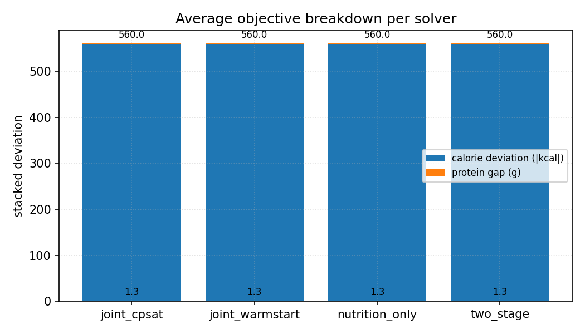

CIS 1921 — Final Project
Aryan Jeena · Aadithya Srinivasan
Joint LP/MIP + CP-SAT formulations on a 7 × 48 weekly time grid
Training adherence depends on more than macros — when you eat, when you lift, and when you sleep all matter.
Real students juggle class schedules, dining-hall windows, budgets, and recovery rules simultaneously. The standard "meal planner + calendar app" split solves each dimension independently and produces plans that are technically compliant but practically useless — e.g. meal prep that finishes 15 minutes before a squat PR.
The joint formulation is the whole point.
7 days × 48 half-hour slots = 336 slots/week.
Everything in integers (cents, grams, slots) — CP-SAT requires it.
serve[d, m, f] — int servingsmeal_active[d, m] — boolmeal_start[d, m] + intervalwk_sched[d, w], wk_start[d, w]sleep_start[d], hydration boolsUserProfile — macros, budget, exclusions, availability, pantryFoodItem[] — Penn Dining + USDA + curatedWorkoutTemplate[] — duration, intensity, recoverySolverResult { status, objective, runtime_s, plan }
Same input/output contract → comparable experiments.
| nutrition_only | two_stage | joint_cpsat | joint_warmstart | |
|---|---|---|---|---|
| Macros + budget | ✓ | ✓ | ✓ | ✓ |
| Workout scheduling | ✗ | ✓ | ✓ | ✓ |
| Sleep + recovery spacing | ✗ | ✓ | ✓ | ✓ |
| Peri-workout meal timing | ✗ | partial | ✓ | ✓ |
| Trade macro slack ↔ schedule | ✗ | ✗ | ✓ | ✓ |
| Warm-started from two-stage | ✗ | ✗ | ✗ | ✓ |
| Technique | LP/MIP | MIP → CP-SAT | CP-SAT | CP-SAT + AddHint |
All four implement BaseSolver with identical signatures —
apples-to-apples runtime, feasibility, and objective comparison.
AddNoOverlap — meals + workoutsAdherence is a constraint; cheapness, macro fit, and schedule pleasantness are the objective.
All four solvers solve the balanced scenario to OPTIMAL in seconds:
$ python scripts/run_demo.py
--- nutrition_only --- status=OPTIMAL runtime=0.09s obj=-266
--- two_stage --- status=OPTIMAL runtime=0.21s obj= 0
--- joint_cpsat --- status=OPTIMAL runtime=1.33s obj=-266
--- joint_warmstart - status=OPTIMAL runtime=1.52s obj=-266$ python -m src.app.cli solve \
--preset lean_bulk --solver joint_cpsat --figure
# → 7-day plan: 3120 kcal/day, 202g protein, $0 (dining hall)
# → meals placed in availability windows
# → 3 hard workouts respecting recovery rules
# → sleep blocks each nightSwitch to terminal →

Catalog size 10 → 200 foods. joint_cpsat stays
practical up to ~80 foods; warm-start narrows the gap on big catalogs by seeding the joint
model from the cheap two-stage plan via model.AddHint(...).

Feasibility per (instance × solver)

Stacked objective by penalty term
Where joint pays off: instances where the two-stage commits to food choices the scheduler cannot fit. Where it doesn't: small loose instances where two-stage hits OPTIMAL faster than the joint can presolve.
Penn Dining HTML parser + USDA stub + curated sample CSV. Graceful fallback chain so the project always runs offline.
Four formulations, shared BaseSolver contract,
runtime + feasibility + Pareto + objective-breakdown analyses.
Parameterized instance generator. Catalog sizes
[10..200]; 6 named scenarios from balanced to "impossible".
JSON presets + CLI flags + Streamlit form. Pantry mode toggle models dining-hall access with cost weight zeroed.
MIP + CP-SAT decomposition + LNS warm-start hybrid + assumption-literal IIS for actionable infeasibility messages.
37 tests, 5 figure types × 3 sweep prefixes, machine-readable long-format CSVs, 456-line written report.
SufficientAssumptionsForInfeasibility() returns the smallest
group(s) the user must relax: calorie band / protein floor / budget / workout count /
scheduling overlaps.Column generation / Benders decomposition past 200 foods.
Today the joint model is well-behaved up to ~100 — beyond that the
(food × meal_type × day) combinatorics start to bite.
A missed workout triggers a partial re-solve over the remaining days, warm-started from what the user already did.
Cookie-aware Playwright fetcher behind a feature flag. Current sample is hand-curated and semantically identical to what the page yields.
Currently soft; promoting to a hard constraint in pantry mode would model competitive-athlete users more faithfully.
github.com/aryan-jeena/CIS1921Project
Aryan Jeena · Aadithya Srinivasan · CIS 1921 · 2026
Questions?